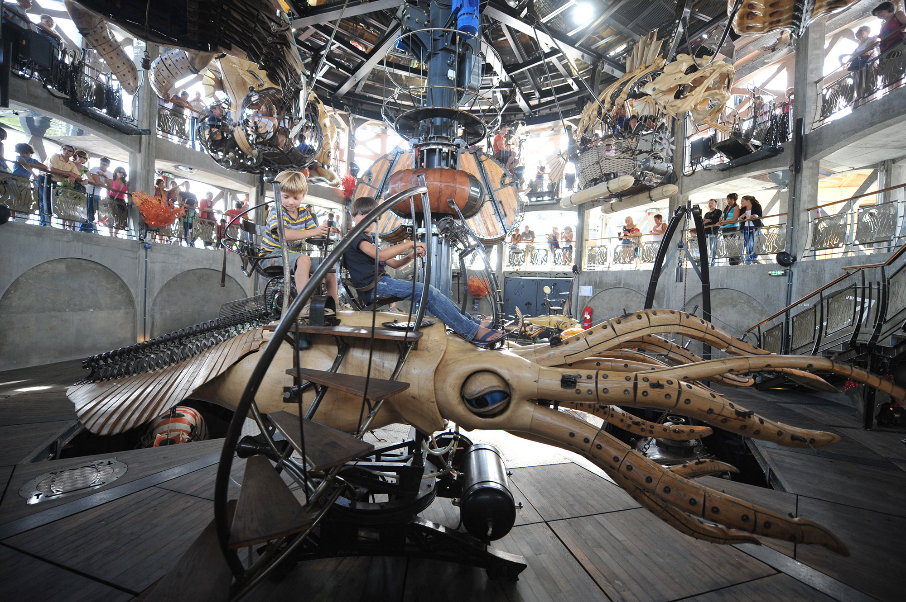

Situé en bord de Loire, face au Musée Jules Verne, le Carrousel des Mondes Marins semble sortir du ventre de l’Île de Nantes, à l’endroit le plus maritime de la ville. Adultes et enfants plongent dans le même imaginaire avec cet incroyable aquarium mécanique que vous découvrez à votre rythme.
Véritable théâtre à 360°, il vous accueille dans une incroyable sculpture dédiée à la mer. Spectateurs d’étranges et inquiétantes créatures marines qui tournent dans une gigantesque pièce montée sur trois niveaux, vous découvrez la mer dans tous ses états, depuis les fonds marins, les abysses et jusqu’à la surface de la mer. Ce carrousel géant, de près de 25m de haut et de 22m de diamètre, est une machinerie qui réveille l’art forain. Trois manèges sont empilés dans une véritable dentelle de béton, surmontée d’un chapiteau orné de frontons, et gardés par 16 pêcheurs originaires de tous les océans du monde. L’accès seul au Carrousel des Mondes Marins est autorisé à partir de 13 ans. L’exploitation du Carrousel des Mondes Marins est soumise aux conditions météorologiques.

découvrez le Crabe géant, le Calamar à rétropropulsion, l’Engin d’exploration qui plonge dans la salle des machines, et le Bathyscaphe qui grimpe le long du mât central… et le dernier arrivé : le Poisson-coffre Au total, 14 éléments fixés sur un plateau tournant
6 éléments sont suspendus à 5 mètres au-dessus des fonds marins : le Luminaire des grands fonds, la Raie Manta, ou le Poisson pirate. Seuls les enfants d’une taille supérieure à 1,35 peuvent embarquer à ce niveau.

un plateau tournant, protégé par un chapiteau, emporte bateaux, attelages marins et autres Poissons volants, Bateau tempête, Coques de noix et Méduses dans une ronde démontée par 24 grandes vagues mécaniques.

« L’attachement des Nantais au passé maritime de leur ville, l’implantation des Machines de l’île dans les anciens chantiers naval de Nantes, à la pointe aval de l’île de Nantes ont imposé le thème de la mer dès l’origine du projet en 2001. La richesse de l’imaginaire lié à la mer n’a pas de limite, il est partagé par tous. L’univers de la pêche ou des voyages au long cours ont fait que l’homme est au cœur de toutes les aventures maritimes. Grands navigateurs ou pirates, capitaine Achab ou Némo peuplent nos imaginaires. Un coucher de soleil sur l’océan, la beauté du monde du silence télescopent la peur des grands fonds et des monstres abyssaux... L’idée de reprendre la structure des quais pour porter les Mondes Marins a été le point de départ de l’invention du Carrousel. Comme sortie des soubassements de l’île, il a trouvé sa place au pied de la grue jaune, face au musée Jules Verne. L’autre idée forte qui a conduit sa conception tient à la superposition de 3 manèges ; cela rejoignait notre volonté de concevoir une incroyable machinerie qui réveille l’art forain. De 2007 à 2011, les 35 éléments des Mondes Marins ont peuplés la Galerie des Machines. Les Nantais ont pu les voir se construire sous leurs yeux dans l’atelier, puis en action dans la Galerie des Machines et aujourd’hui ils embarquent dans le Carrousel. » François Delaroziere et Pierre Orefice
Nicole Concordet et Christophe Theilmann sont les architectes de la première tranche des Machines de l’île inaugurées en juillet 2007. Nantes Métropole et les auteurs ont décidé de leur confier la maitrise d’œuvre des Mondes Marins et de la Déferlante. A partir de l’invention du concept des Mondes Marins par les auteurs, du dessin initial de François Delaroziere et des études d’exécution de La Machine, ils ont conduit ce chantier et ont créé notamment La Déferlante. Cet espace s’inscrit dans la continuité de la pente de la cale 3, aujourd’hui végétalisée. Il accueille les locaux techniques, les locaux du personnel, une salle de 120m2 pour des évènementiels et un petit bar.